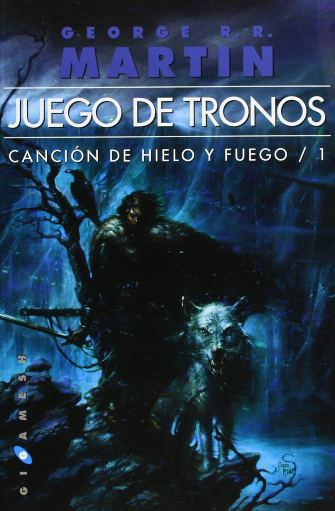
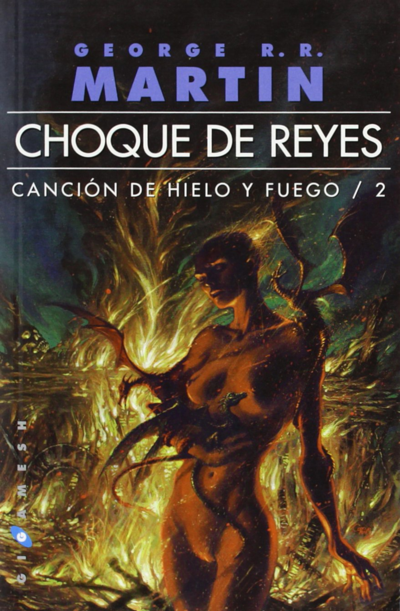

Libros leídos en 2018
1984 de George Orwell
ISBN: 978-84-9989-094-4

En la Oscuridad de Antonio Pampliega
ISBN: 978-84-9942-609-9
Juego de Tronos George R.R. Martin
ISBN: 978-84-96208-92-6

Choque de Reyes George R.R. Martin
ISBN: 978-84-96208-68-1

Dispara yo ya estoy muerto de Julia Navarro
ISBN: 978-84-663-3371-9
El Hombre que Amaba a los Perros de Leonardo Padura
ISBN: 978-84-8383-577-7
Dime quién soy de Julia Navarro
ISBN: 978-84-9032-222-2

Patria de Fernando Aramburu
ISBN: 978-84-9066-319-6
Historia del Tiempo: del Big Bang a los Agujeros Negros de Stephen W. Hawking
ISBN: 978-84-206-5199-6
Libros leídos en 2019
Libros por leer
- Tormenta de Espadas (Canción de Hielo y Fuego) de George R.R. Martin
- Festín de Cuervos (Canción de Hielo y Fuego) de George R.R. Martin
- Danza de Dragones (Canción de Hielo y Fuego) de George R.R. Martin
- El resto de Canción de Hielo y Fuego
- Fariña de Nacho Carretero
- El Nombre del Viento (Crónica del Asesino de Reyes) de Patrick Rothfuss
- El Temor de un Hombre Sabio (Crónica del Asesino de Reyes) de Patrick Rothfuss
- Las Puertas de Piedra (Crónica del Asesino de Reyes) de Patrick Rothfuss
- Un mundo feliz de Aldous Huxley
- El mono desnudo de Desmond Morris
- Las hijas del capitán de María Dueñas
- Las mentiras de la ciencia de Federico di Trocchio
- Matanzas en el Madrid Republicano de Felix Schlayer
- Memorias de Santiago Carrillo
- Harry Potter de J.K. Rowling
- La ladrona de libros de Markus Zusak
- La sombra del viento de Carlos Ruiz Zafón
- El juego del Ángel de Carlos Ruiz Zafón
- El prisionero del cielo de Carlos Ruiz Zafón
- El laberinto de los espiritus de Carlos Ruiz Zafón
- Habitaciones cerradas de Care Santos
- El ladrón de sueños de Verónica García Peña
- La biblia de barro de Julia Navarro
- Esclava de nadie de Agustín Sánchez Vidal
- La loba de Al-Andalus de Sebastián Roa
- La piel de la memoria de Jordi Sierra i Fabra
- Lo que me queda por vivir de Elvira Lindo